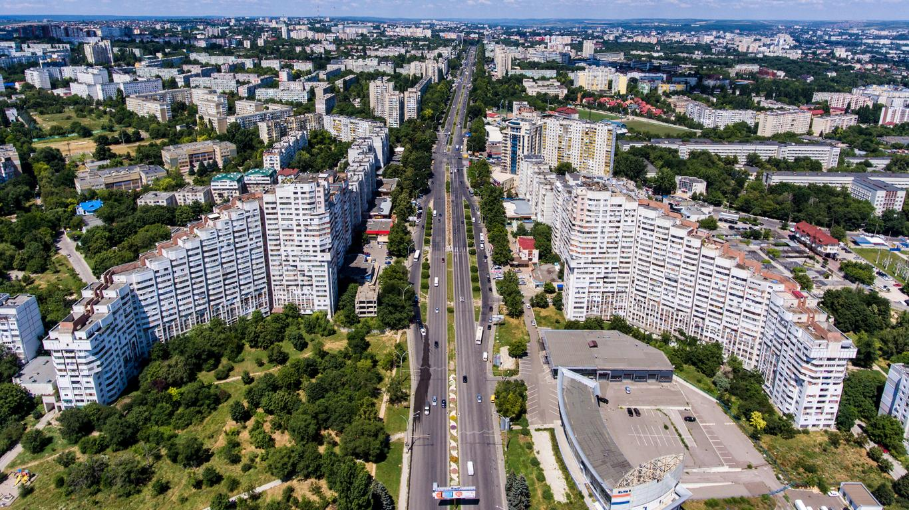

À propos de notre site de voyages
Découvrez des destinations uniques
 Bienvenue sur notre site dédié à l'exploration de destinations fascinantes à travers le monde. Nous vous invitons à découvrir des lieux extraordinaires et à vivre des expériences inoubliables dans des endroits tels que :
- Croatie : Explorez les magnifiques plages de Banje Beach et découvrez la richesse culturelle de ce pays méditerranéen.
- Albanie : Plongez dans l'histoire et la beauté naturelle de l'Albanie, notamment sa capitale Tirana et ses sites archéologiques impressionnants.
- Moscou : Immergez-vous dans la grandeur de la capitale russe, découvrez son architecture emblématique et son riche héritage culturel.
- Moldavie : Explorez les charmes de Chișinău, la capitale de la Moldavie, et découvrez ses vignobles pittoresques et sa cuisine délicieuse.
- Dubaï : Plongez dans le luxe et l'extravagance de cette métropole futuriste, où les gratte-ciel audacieux côtoient le désert aride.
- Santorin : Imprégnez-vous de la beauté envoûtante de cette île grecque emblématique, où les villages blancs perchés sur des falaises volcaniques offrent des vues à couper le souffle sur la mer Égée et ses célèbres couchers de soleil.
Peu importe vos préférences de voyage, notre site est votre compagnon idéal pour planifier votre prochaine aventure.
Partagez vos expériences de voyage
Nous croyons en la puissance du partage d'expériences. Rejoignez notre communauté de voyageurs passionnés et partagez vos récits, photos et conseils de voyage avec d'autres explorateurs du monde.